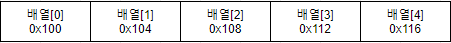

배열
같은 타입의 여러 변수들을 하나의 묶음으로 표현한 것을 배열이라고 한다. 배열은 생성할때 크기를 정해주어야 한다.
배열을 실무적으로 사용할 가능성은 극히 드물다고 생각하지만 , 컬렉션 프레임웍에 개발에 사용되기도 하며 중용성은 간과하면 안될듯 싶다.
물론 배열을 파는것보단 list, arrayList, stack, hashset,treemap … 다양한 자료구조를 배우는것이 더 효율적일것 같긴하다.
지금까지 우리는 단일값만 저장되는 변수 선언에 대해서만 배웠다.
만일 우리가 10000가지의 변수를 저장해야 한다면?
다음과 같은 상황이 발생된다면 어떨까? 변수를 10000이나 선언과 초기화를 진행 해야 된다면 정말 끔직하지 않을 수 가 없다. 다행이도 우리는 배열이라는 자료구조를 찾아 이 상황에 대해 대처가 가능하다.
배열의 생성
1
2
타입[] 변수이름;
변수이름 = new 타입[길이];
그럼 배열을 선언해보자
1
2
int[] numbers;
numbers = new int[5];

다음 그림과 같이 배열의 형태는 int 4byte 씩 주소가 할당 될것이다. 여기서 특이한점은 배열의 초기 시작점 인덱스 값이 1이 아닌 0이라는 점이다. 이부분을 잘 기억하자.
배열을 이용하여 값을 저장하여 보도록 하겠다.
array.class
1
2
3
4
5
6
7
8
9
10
11
12
13
14
15
16
17
18
19
20
21
22
23
24
25
26
27
28
29
30
31
32
33
34
35
36
37
38
39
40
41
42
43
44
45
46
47
48
49
50
51
52
package conditionWhile;
public class array {
public int[] array;
public int cursor = 0;
private int size = 0;
//배열의 길이를 가져온다.
public int getSize() {
return size;
}
//배열의 길이를 설정한다.
public void setSize(int size) {
this.size = size;
}
//배열을 초기화한다.
public void initialArray() {
array = new int[getSize()];
}
//배열을 복사한다.
public int[] copyArray() {
return array;
}
//배열의 값을 추가한다.
public void addArray(int value) {
array[cursor++] = value;
}
//배열의 값들을 본다.
public void showArray() {
int count = 0;
for(int item:array) {
if(count++==cursor) return;
System.out.println("배열아이템값:"+item);
}
}
//배열의 크기를 재할당 한다.
public void incrementArray(int size) {
System.out.println("배열의 길이는: "+array.length);
setSize(getSize()+size);
int[] temp = new int[getSize()];
int i = 0;
for(int item:array) {
temp[i] = array[i++];
}
array = temp;
System.out.println("배열의 길이는: "+array.length);
}
}
main.class
1
2
3
4
5
6
7
8
9
10
11
12
13
14
15
16
17
18
19
20
21
22
23
24
25
package basic;
import conditionWhile.array;
public class main {
public static void main(String[] args) {
array ar = new array();
ar.setSize(100);
ar.initialArray();
ar.addArray(1);
ar.addArray(2);
ar.addArray(3);
ar.addArray(4);
ar.addArray(5);
ar.showArray();
ar.incrementArray(100);
ar.showArray();
//배열을 증가하였기 때문에 에러가 발생하지 않음.
for(int i = 0; i<100; i++) {
ar.addArray(i);
}
}
}
2차원 배열
배열은 2차원으로도 선언이 가능하다.
1
int[][] number = new int[값][값];
2차원 배열을 활용하는 방법은 여러분이 하시길 바란다.